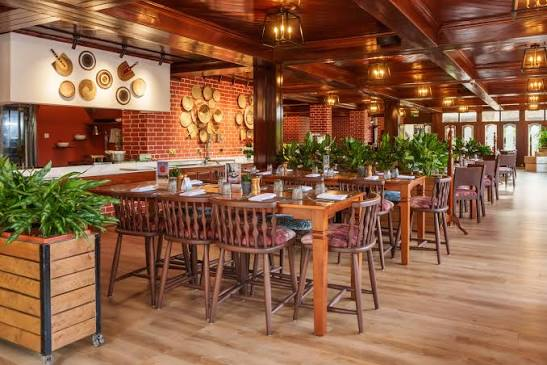

Who this site is for
This website is designed to help customers easily explore Wa Carlos Restaurant online. It provides information about the restaurant, its menu, available meals, prices, and contact details. Through the website, customers can discover their favourite dishes, learn more about what we offer, and conveniently decide what they would like to order before visiting or contacting us. Our goal is to make finding information about Wa Carlos Restaurant faster, easier, and more convenient for everyone.

What can you find
- Our services
- opening hours
- Menu